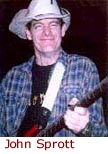
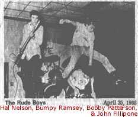
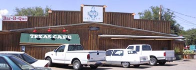
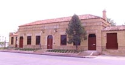

|
|
|
-continued
from page
1- Chris: Your dad can sing. Your dad can really sing. John: Dad is an artist. He’s an artist, pure and simple. Practicing law has been a good thing; that's how he makes his living. But the fact of the matter is that he has an artistic heart. His creative element rears itself in so many different ways. He's done a few sculptures through the years, and they're wonderful and beautiful, and even somewhat renowned. Chris: And your mother is one of the leading - I guess one would call it - "charity activists" in Lubbock…I don’t know what you would call somebody like that. But somebody who just really goes out there and makes a difference in the community. John: My mother has so many wonderful qualities, we’d burn up too many tapes talking about it. But the story is: Through the Junior League and all of the charity work that they do, Mom got started with working with battered women, and then she founded Women’s Protective Services in Lubbock. She’s now the Director of Planned Parenthood in Lubbock. Chris: How is that going over in Lubbock? John: Um - It’s going over like a lead zeppelin.
Because, uh…[Laughs] You know, it’s very hard to preach
the gospel of contraception and women’s health issues there
in Lubbock -- in one of the really most conservative "Christian-Republican"
type communities around. They always put abortion on the forefront
of the argument. Chris: So, I remember when you were in high school; You had all that musical equipment in your room… So your parents are George Nelson and Joe Love Nelson, pillars of Lubbock society. Was it your grandfather who was a State Senator? John: Yea. Hobert Nelson, State Senator, 1937. Chris: You were this nice "Southwest Lubbock" family. So your parents decide to buy you all this equipment. And you were a big part of the whole Southwest Lubbock Rock-n-Roll garage band scene - and there's a lot of amazingly talented people who've come out of that group. So your parents were supportive of that business? Do you think your parents reacted to your interest in Rock music differently in relation to how the general population did? John: Only now am I able to appreciate what a gift it is to have parents who will buy you a drum set to put in your bedroom when you’re 8 years old; To have parents who recognized that you really truly have a passion about something; probably early on, when you were looping your patent leather white belt through your lunch pail and banging it with a big wooden spoon. Chris: That’s cool. John: Both of them have always been singers and artistic thinkers and appreciators of art and music. Chris: So you think they were glad to see one of their babies interested in music? John: Yea. Dad could have been many things: He could
have been a professional baseball player; and he could have been
a professional musician. He’s one of those people that would
have been great at anything that he did. Chris: Let’s talk about some other specifics. I want to talk later about Squarehead. But Hal Nelson - no relation to you, of course - the bass player for Squarehead, told me that they loved writing their own songs and doing their original music but that they felt like they had to do "cover stuff" mostly, because that’s what people are paying to see. Maybe you could talk about the people who are trying to be creative musicians and still live in Lubbock? That’s really, I think, the angle I was trying to get from you; people who are in Lubbock, trying to make music and also trying to make a living... or make their "Taco Villa cash," whatever. John: You betcha’. The guys that are the pure examples of that are: Robin Griffin, and John Sprott, and D.G. Flewelyn, P.J. Belly, Elvis T. Busboy, and on and on and on, really. Chris: The Nelsons. Donnie Allison. John: Yea! Donnie Allison. Chris: What was his story? Darren Welch’s dad was a plumber, right? John: Yea. Welch Plumbing. Bobby Welch is Darren's
dad; He’s big in the plumbing business in Lubbock, and also
he was a big-time Little League Coach. Darrens' brother Doug
was a super-straight, baseball, "all-American", short-haired
ol' boy. Darren was "the Partier." Chris: In Lubbock, it seems like you’re either
"a Church-goer" or "a Partier." You gotta'
commit at some point, there in Lubbock, one side of the street
or the other...or should I say, "one side of the Strip or
the other?" John: Mhhm. You could go to Young-Life and play the guitar but, y’know, it would have to be the acoustic. And you’re pretty much stuck with "Jesus Stood By the Way and He Cried." or "Kum By Yah." But you’re not gonna’ get away with "Breakin’ the law! Breakin’ the Law!" Bobby Patterson once played a Young-Life gig once with his band; They had a song called "You Get Me Off" and they turned it into "You Knock It Off", like "Knock off the drugs." Chris: Bobby Patterson was the lead-singer for The Rude Boys. Bobby Patterson is Eddy Patterson’s younger brother…Eddy Patterson of Stubb's. John: The Great Stubb’s
Barbecue. God bless it! I just want to make sure
that I’m on record as saying how absolutely proud I am of
Eddy and all his Stubb's brothers there. I’m one
of the few people that could probably tell this story, but I
lived in Florida for a year while I was going to recording school
and Eddy was driving across the country getting that Stubb’s
Barbecue Sauce into the grocery stores. He drove through
Orlando and hung-out with me. But he drove around down there
and worked so hard that soon I could go to my grocery store on
the corner in Orlando, Florida, and buy Stubb’s Barbecue
Sauce, which I was very proud of. You can get Stubb's Barbecue Sauce in Paris, France. Now, of course, it’s all over the world Chris: They have done a great job.  John: The Rude Boys
took the "Alternative" point in Lubbock in the Mid-80's.
With Bumpy playin’ the drums, they were absolutely the best
Pop-Alternative-Party Band that I’ve ever seen come out
of Lubbock. Very dynamic. Bobby Patterson is a pure entertainer. Bobby’s one of the guys that I’ve always looked up to the most for being able to "do it all" artistically. Wonderful guy. Chris: He had a lot of courage in Lubbock. Bobby had NO inhibitions about being an actor and an artist…And proud of it. John: Then there's John Fillipone
and Hal Nelson; I can’t
say enough. Those two guys are a classic example of "Synergy"
or "the whole is definitely greater than the sum of the
parts." Hal played the bass. John was a guitarist. Chris: Why did he go away for high school? John: Um…y’know, to become the fuckin’ giant "big-brain" genius that he is now, I guess. I don’t know. He’s one of the smartest guys I’ve ever known. Actually, you and John are the two smartest fuckers I’ve ever known. We're all making D’s and C’s in school, and you two guys were making straight A’s, and partying twice as hard as we were. Y'all were my idols. But anyway...Fillipone came back to Lubbock, and he was always playing guitar. He was a great musician, took it very seriously and by the book. And of course, in every band Fillipone was ever in, it was a rare treat to have Fillipone sing. As you’ll recall in the Squarehead days, there was a big movement to "Let Fillipone Sing." [Laughs.] Okay …Had we had more Velvet Underground, or Kris Kristofferson, or uh…Bob Dylan sort of vocal set-ups, Fillipone would have been the shoe-in. As it turned out though, in Squarehead, we were particularly doing a lot of Jane’s Addiction-type stuff, Violent Femmes, Alternative ‘80's stuff. Chris: Now, I think we’re kind of blending…We got Rude Boys and we got Squarehead… John: Yea, I know. It’s all sort of a blur. Sorry. Chris: Of course, the common element between those two bands were John Fillipone and Hal Nelson. That combo, along with with Trent Hunt and Mark Fallis on drums, made up Squarehead, for most of it’s existence. Then, at the end there, you John Nelson took over on drums. John: And that was really when the "creative explosion" of Squarehead took place. [Laughs.] Chris: So you had been working the sound for Squarehead for along time and eventually, you joined the band. John: Yea. There’s that equipment talking, see? Now we’re back to all the equipment. How that all happened and how I ended up being a recordist and an engineer and a producer-type freak is that I had all of this equipment that we needed to have in order "to take our music to the world, Man!" So we had all of this great equipment. See, I didn't have a band at the time when Hal was in The
Rude Boys. Hal called me and said, "Hey, Dude. Do you
still have all that gear? You wanta’ run our sound?"
It at The Spoon.
So I went and ran the Rude Boys
sound, and I really enjoyed it. So when Squarehead first got started, they started off with the name The Love Drops. Then they changed it to The Fence-Post Moderns. Chris: Cruisin’ With a Boner was one I liked. John: I believe Cruisin’ With a Boner was a Rude Boys-alternative theme. Chris: Oh. Well, I liked that name. Don’t forget Pale and Thin. John: Yea, Pale and Thin was a John Fillipone/Trent Hunt little eclectic, two acoustic guitar, "Depot Baggage Room" sort of vibe. [NOTE: The Depot Baggage Room was once an up-scale happy hour lounge in the old historic Lubbock Train Depot. That building now houses Lubbock’s Buddy Holly Center, the museum of Buddy Holly’s life.] Chris: Oh, I see: "Squarehead: Unplugged." John: Yea. Exactly. That was Pale and Thin. Chris: Hal’s father was the Assistant Dean of Arts & Sciences at Texas Tech University. I didn’t know Hal in high school but we met in the "Honors" program at Texas Tech; We had a lot of English classes together. Hal always wore a leather jacket. I remembered that he had been in The Rude Boys, but I didn’t really meet him when he was in The Rude Boys. I knew he was the bass player. But after I got to know Hal…That dude…Every time I get around him, I just want him to play his guitar. He's really so good. [There is a knock at the door.] John: HELLO! It’s Amy Thormahlen! [Note: Amy is a designer, also from Lubbock, living in L.A. at the time.] Chris: We were just talking about Hal. Amy: Hal! I Love Hal! Chris: We’ll have to end this with Hal, then.
ANALYSIS I recall many times as a youth when I was in some dark Lubbock barroom, marveling to the talent and sound emanating from these guys on stage, thinking, "I must be in the coolest place in the world right now! How can this sort of talent go un-tapped, stuck here in the remote plains of West Texas?" It was listening to these bands that made it clear to me at a young age that there is something very special about the music scene in my hometown. Not everyone has it in them to set out on the road and pursue the rough business of a road-show, recording career as Joe Ely did, or Natalie Maines. For every Joe Ely or Natalie Maines that made it out of Lubbock, there are at least a hundred phenomenal artists with equal talent who never make it out of the local bars. Being in Lubbock and so far removed from the rest of the country, many artists resign themselves to "working for Taco Villa money." The odds of getting discovered by a national recording label are extremely slim for someone living and performing in Lubbock; for that, one must go to Austin or L.A. or Nashville to be seen. But as Terry
Allen says in his song Flatland Farmer: Now, of course, this phenomenon is not limited to Lubbock,
Texas, but often, the best, most heart-felt music is out
in the country and will never be discovered by the masses. |
| home | Interviews | Stories | Pictures | Lyrics | What's New? |
|
About Us |
|
Copyright 2002 |
{kind=link}